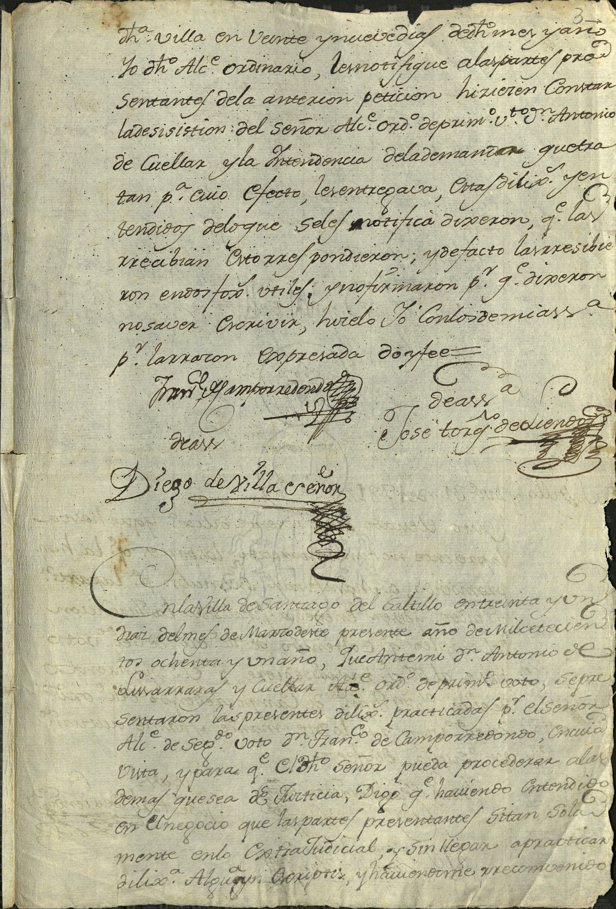
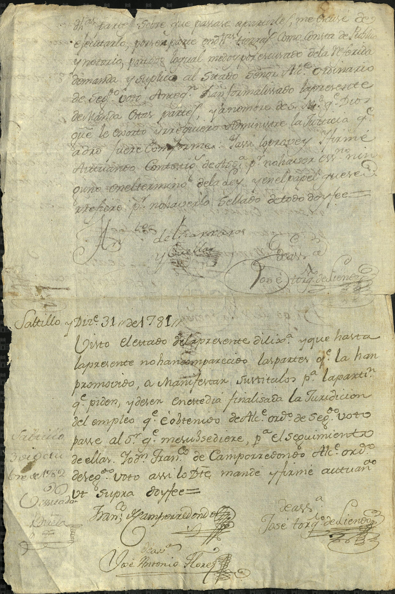

Francisca Javiera Ramos · José García · Isabel de las Fuentes


| Fondo | Presidencia Municipal (PM) |
| Firma AMS | AMS, PM, c 33, e 22, 3 ff |
| Fecha | 28 de marzo de 1781 (según la ficha del catálogo) |
| Descripción de la ficha del catálogo (tal cual) | Francisca Javiera Ramos, viuda de José García, solicita se le devuelva su propiedad en el rancho de San Juan Bautista heredada por su madre Isabel de las Fuentes. |
| Id de ficha en el portal | 71800 |
| Personas indexadas en la ficha | Francisca Javiera Ramos, José García, Isabel de las Fuentes |
Lectura paleográfica parcial. Lo que no se lee con certeza está marcado [ilegible] o [duda: …] y no se toma como dato.
Imagen 1: foja marcada «3» (diligencias).
«… dicha villa en veinte y [duda: nueve] días del mes y año [duda: dichos]. Yo dicho alcalde ordinario le notifiqué a las partes presentantes de la antecedente petición, hicieron constar la desistición del señor alcalde ordinario de primer voto don Antonio de Cuéllar y la intendencia de la demanda que [duda: tratan], para cuyo efecto les entregaría otras diligencias, y entendidos de lo que se les notifica dixeron que las recibían, otro sí [duda: respondieron] y de facto las recibieron en [duda: endosos útiles], y no firmaron por que dixeron no saber escribir; hícelo yo con los de mi asistencia, por ellas, con expresada, doy fee.»
Firmas: [duda: «Fran.co de Campo Redondo»]; «de asa. José Toribio de Liendo» [duda]; «de asa. Diego de Villa Creñon» [duda].
«En la villa de Santiago del Saltillo en treinta y un días del mes de [duda: Marzo] presente año de mil setecientos ochenta y un año, ante mí don Antonio de Lizarraras y Cuéllar, alcalde ordinario de primer voto, se presentaron las presentes diligencias practicadas por el señor alcalde de segundo voto don Francisco de Campo Redondo, en cuya vista, y para que el dicho señor pueda proceder a las demás que sea de justicia, digo que habiendo entendido en el negocio que las partes presentantes [duda: sitan] solamente en lo extrajudicial, y sin llegar a practicar diligencia alguna [duda: a ocurrir], y habiéndome [duda: reconvenido] …» (continúa)
Imagen 2.
«… dichas partes, sobre que pasare a puntuales, me excuse de ejecutarlo, por ser parte en dichas tierras como consta de público y notorio, para lo cual me doy por excusado de la referida demanda, y suplico al citado señor alcalde ordinario de segundo voto, antes que han formalizado la presente, a nombre de su Majestad, que Dios guarde, que le [duda: oiga] y requiera administre la justicia que a derecho fuere conforme. Y así lo proveí y firmé, actuando con testigos de asistencia por no haber escribano ninguno en el término de la ley y el papel que fuere [duda], por no haberlo sellado, de todo doy fee.»
Firmas: [duda: «Antonio de Lizarraras y Cuéllar»]; «de asa. José Toribio de Liendo» [duda].
Nota: «Saltillo y Dic.re 31 de 1781»: «Visto el estado de la presente diligencia, y que hasta la presente no han comparecido las partes que la han promovido, a manifestar sus títulos para la partición que piden, y deber en este día finalizada la jurisdicción del empleo que obtengo de alcalde ordinario de segundo voto, pase al señor que me sucediere para el seguimiento de ellas. Yo don Francisco de Campo Redondo, alcalde ordinario de segundo voto, así lo decreté, mandé y firmé, actuando ut supra, doy fee.»
Firmas: «Fran.co de Campo Redondo»; «de asa. José Toribio de Liendo» [duda]; «de asa. José Antonio Flores» [duda]. Anotación al margen [duda: «Saltillo … de [ilegible]bre de 1782»] [ilegible].
Imagen y ficha: Archivo Municipal de Saltillo, Sefarad MX. Fuente: Archivo Municipal de Saltillo, portal del archivo digital (Presidencia Municipal). Verificado y avalado por Sefarad MX · genealogiasefardi.site.